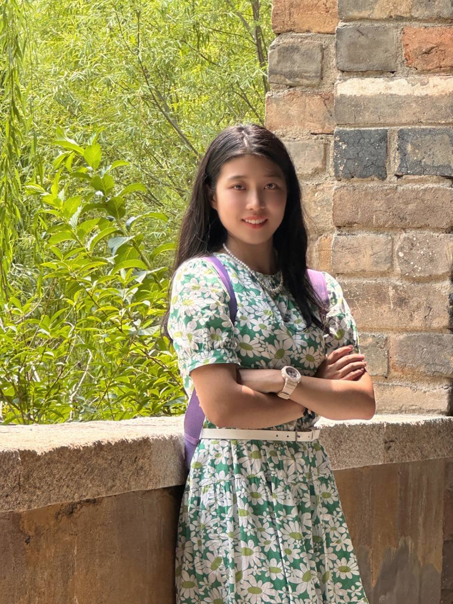
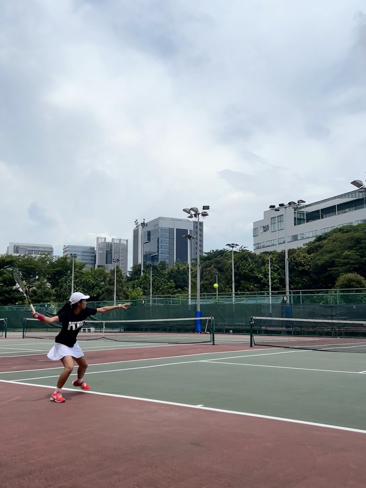
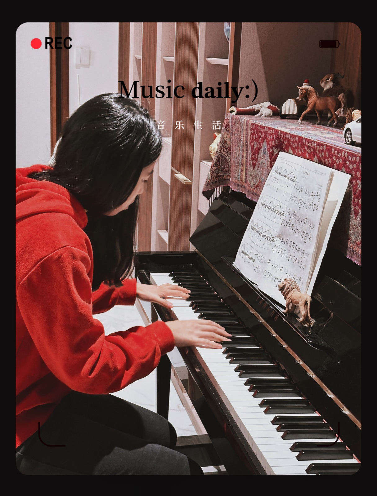

Aug 2023 – Jun 2027
National University of Singapore
B.Comp. in Computer Science · Second Major in Mathematics
AI and Security specializations · GPA: 4.71/5.0 · Dean’s List
Hi, I'm Song Yuexi, a junior from National University of Singapore majoring in Computer Science and second major in Mathematics.
My primary research interests are in computer vision and robotics, and I also explore sports analytics as a personal hobby.

Developed a large-scale semantic segmentation dataset spanning images from 500+ cities worldwide supervised by Dr. Sun Kailai, MIT Professor Zhao Jinhua and UF Professor Wang Shenhao.
Proposed a Mamba-inspired segmentation architecture with a novel angle-based loss function, improving segmentation accuracy by 2% on a 2000-image test set.
Implemented a YOLO-based computer vision pipeline for real-time object detection and perception. Developed mission planning algorithms and strategies for RoboSub competition tasks.
Gained hands-on experience across perception, control, and navigation using ROS2 in an autonomous underwater vehicle.
Researched robotic safety and built a large-scale benchmark dataset for safe mission planning in collaboration with ETH Robotics System Lab. Designed an agentic data generation pipeline using a unified planning framework to simulate diverse planning scenarios and safety hazards.
Wrote test cases and conducted developer testing for secure large file transfer system using IBM. Ensured correctness of file encryption and decryption throughout the transfer process
2024.8 - 2024.12 CS1231S Discrete Structures
2025.1 - 2025.5 CS2040S Data Structures and Algorithms
2025.8 - 2025.12 CS3230 Design and Analysis of Algorithms
Researched on commutative encryption algorithms and PSI-CA problem.
Aug 2023 – Jun 2027
B.Comp. in Computer Science · Second Major in Mathematics
AI and Security specializations · GPA: 4.71/5.0 · Dean’s List
Jan – May 2026
Semester Exchange · GPA: 4.0/4.0
May – Jul 2024
Summer Session · GPA: 4.0/4.0
Aug 2024 – Present
Teaching score: 4.6/5.0 · Honor List of Student Tutors
May – Aug 2026
Developed an AI-powered agentic workflow system for risk assessment and decision support. Engineered production migrations on AWS with Snowflake data workflows, custom user-defined table functions, and end-to-end deployment validation.
Sep 2023 – Dec 2025
Built real-time YOLO perception and mission-planning algorithms, integrating perception, navigation, control, and hardware through ROS2. Contributed to a 1st-place finish in the RoboSub 2025 Autonomy Challenge.
Dec 2024 – Jan 2025
Tested an enterprise secure large-file transfer system and validated encryption and decryption across end-to-end data transfer workflows.
Jan 2025 – Present
Developed a formal notation for data-driven tennis strategy analysis and applied grey relational analysis to identify winning patterns.
May – Aug 2024
Built a SwiftUI application with Firebase and ML Kit for tennis movement analysis, authentication, and data extraction.
Sep 2023 – May 2024
Developed CAN-bus device communication with a 30-member team for SAUVC, placing among the top 15 teams.
I occasionally write down my thoughts on problems I find interesting, as well as notes on things I learn along the way.
Algorithms
A guide to reconstructing binary trees from different combinations of traversal orders.
Security
A practical walkthrough of reverse engineering and exploiting a basic ret2win challenge.

I am a national level 2 tennis player, a former member of the Jinan City Team, and currently play for the NUS varsity team.

I previously played piano in a symphony and now continue to play in my free time.